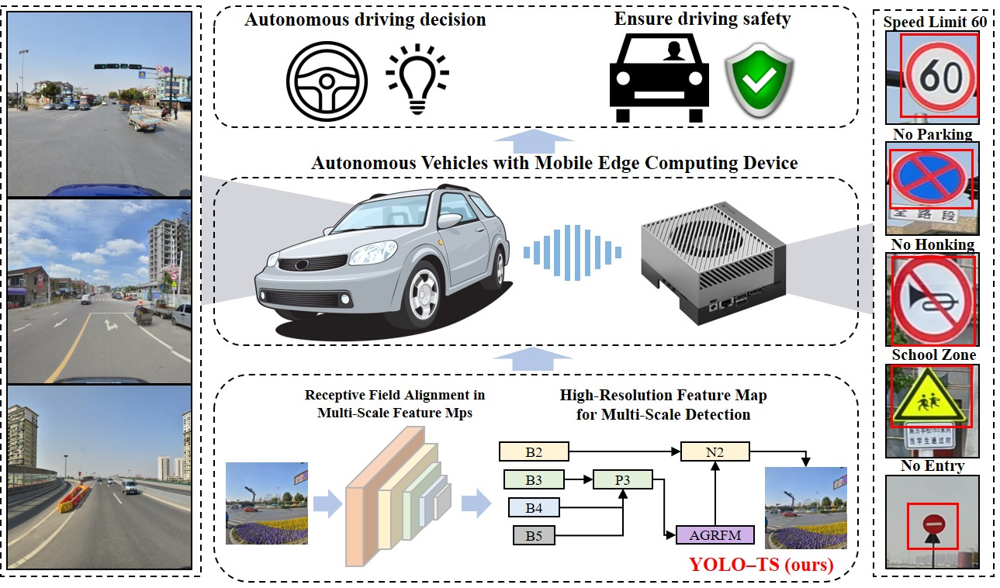

Overview
NanoVerse-TSR is a two-stage framework for small, visually ambiguous, and long-tailed traffic signs in autonomous-driving scenes. It pairs semantic-visual detection with contrastive, language-aware fine-grained recognition.
Small-object detection
RepVL-PAN guidance, a P2 head, and SPD-Conv retain small-sign detail.
Cross-modal recognition
ViT and Rule-BERT align crops with traffic-rule language across 24,715 image-text pairs.
Robust sensing
Evaluation covers TT100K, CCTSDB2021, and adverse-weather subsets.
Selected results
| Benchmark | Metric | Result |
|---|---|---|
| TT100K detection | mAP50 / mAP50–95 | 78.4 / 71.9 |
| TT100K classification | Top-1 | 91.6% |
| GTSRB classification | Top-1 | 97.3% |
Reproduce
git clone https://github.com/xiuwk0820/NanoVerse-TSR.git; pip install -r requirements.txt; python scripts/verify_install.py --skip-weights --skip-data
Citation
@article{lu2026nanoverse, title={NanoVerse-TSR: Contrastive Learning-Driven Traffic Sign Recognition}, author={Lu, Qiang and Xiu, Waikit and Li, Xiying and Hu, Shenyu and Sun, Shengbo}, journal={IEEE Sensors Journal}, year={2026}, doi={10.1109/JSEN.2026.3704014}}